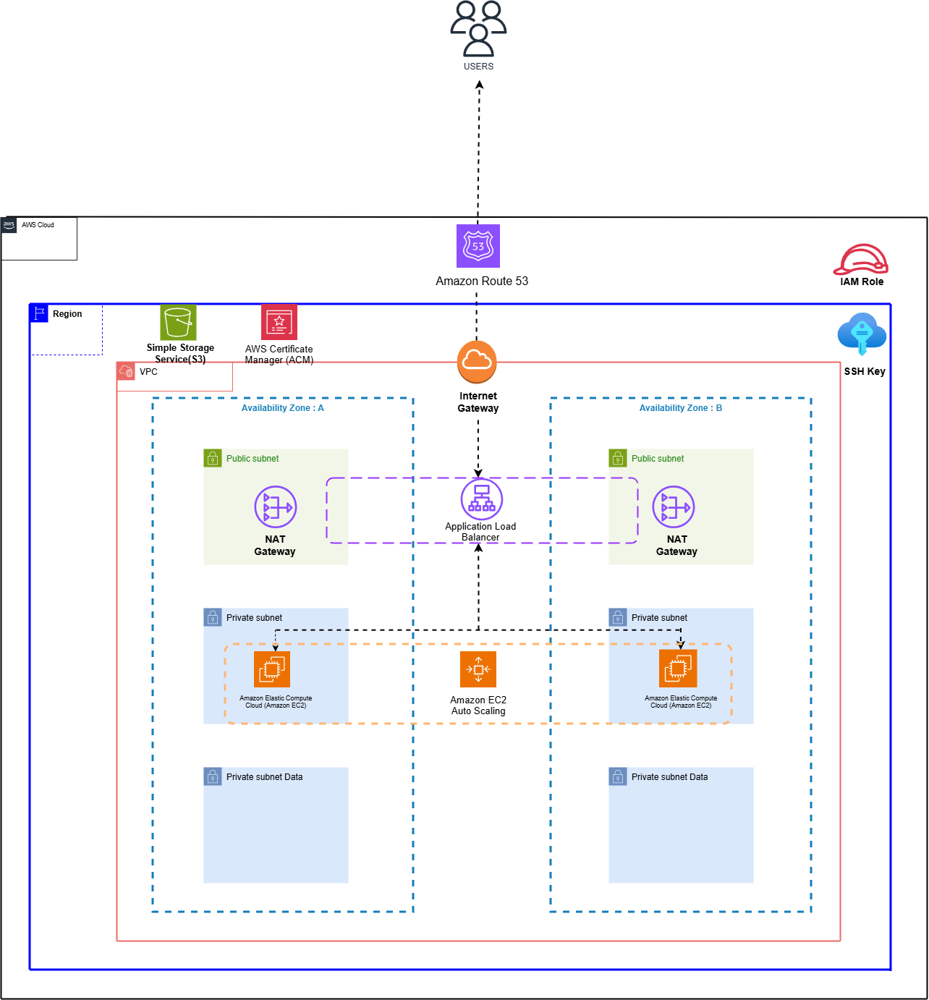

.png)
This project is real-world inspired cloud engineering project designed to transform raw data such as preferences when it comes to football boots, stud type preferences or sizes preferences or size preferences into actionable business insights. This project mirrors a production-grade architecture by leveraging AWS cloud services to build a complete data pipeline and interactive dashboard.It was inspired by a online football store where understanding customer preferences, sales trends and product performance is critical for businesss growth.

BootGalore is a online business established in 2022 that sells Modern,Classic and Rare football boots.This project is a real-world inspired data analysis project focused on identifying key challenges affecting growth, profitability and performance for an online football store. By collecting client data, cleaning it and applying structured analysis. The project delivered actionable insights into customer preferences, sale trends and product performance. It mirrors the type of business intelligence work that supports data-driven decision-making and long-term business growth.

This project demonstrates a highly available and secure static website hositng solution on AWS using hybrid architecture of EC2 and S3. It focuses on right-sizing infrastructure delivering enterprise-grade reliability without over-engineering.